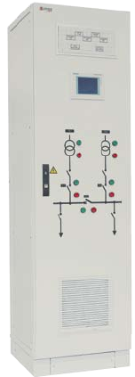

Controller-based ATS systems
We also offer you controller-based ATS systems. We use controllers of most companies present on
the market. ATS system status is visualised on control panels, matrix panels and on panels lined
on the switchgear door. In the controller version, the ATS system can perform any type of ATS and
any switching scenario. Acting on the ATS system status can be performed using switches located
on the switchgear door, as well as the touch control panel.
